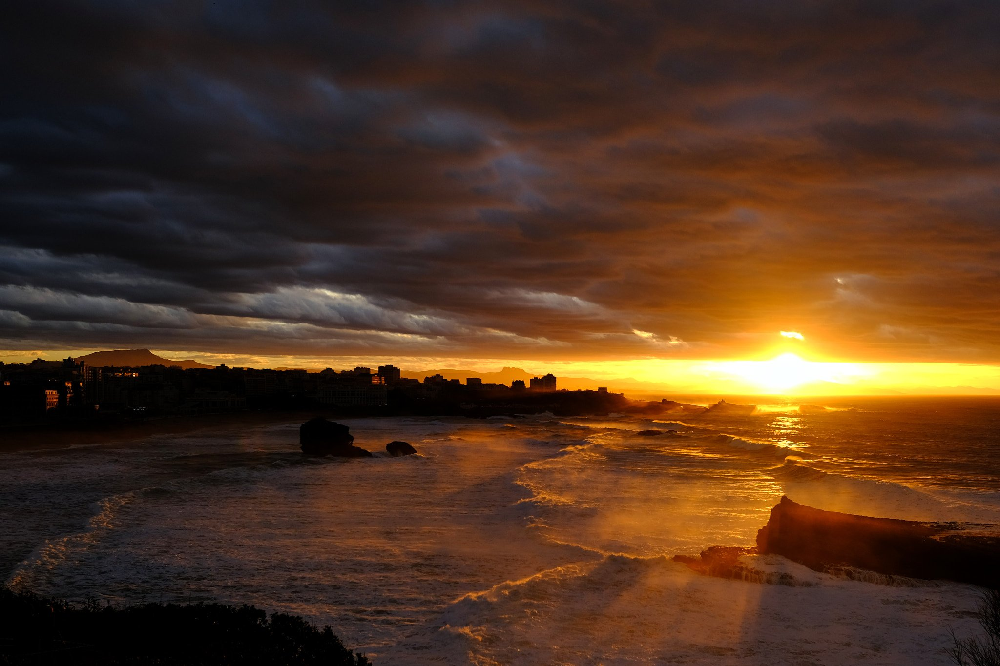
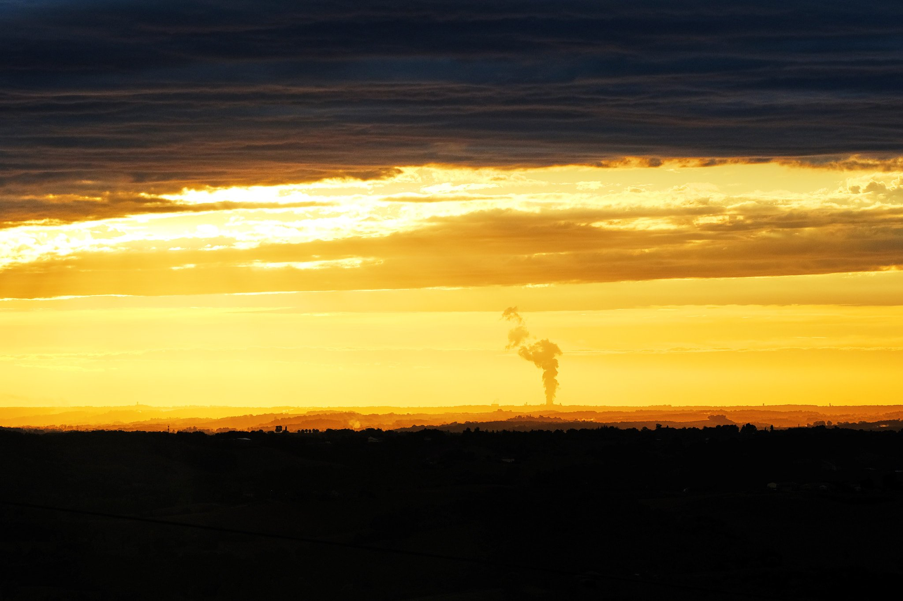
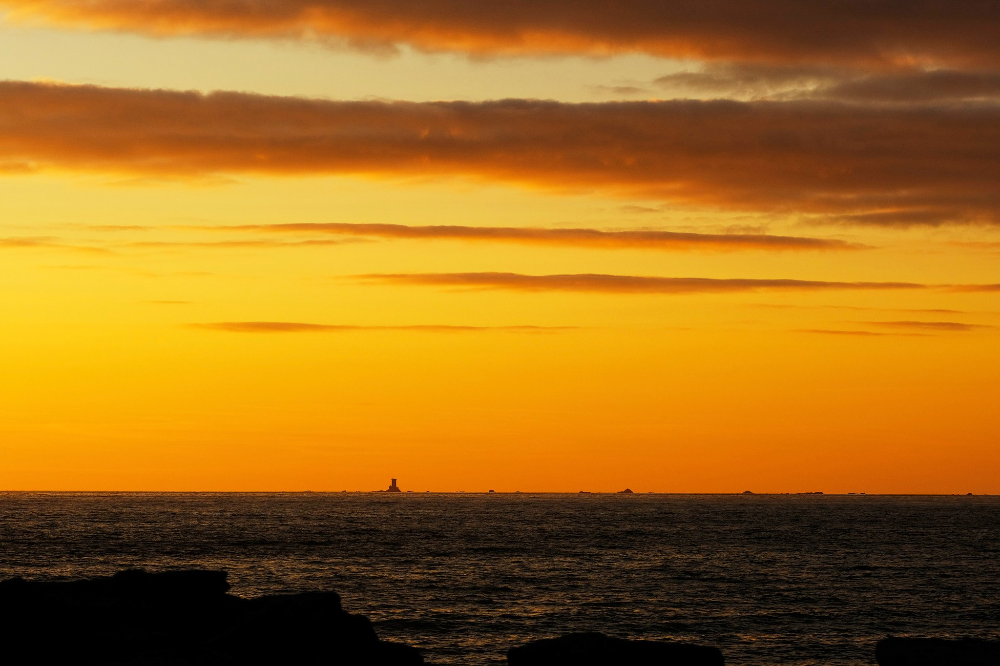
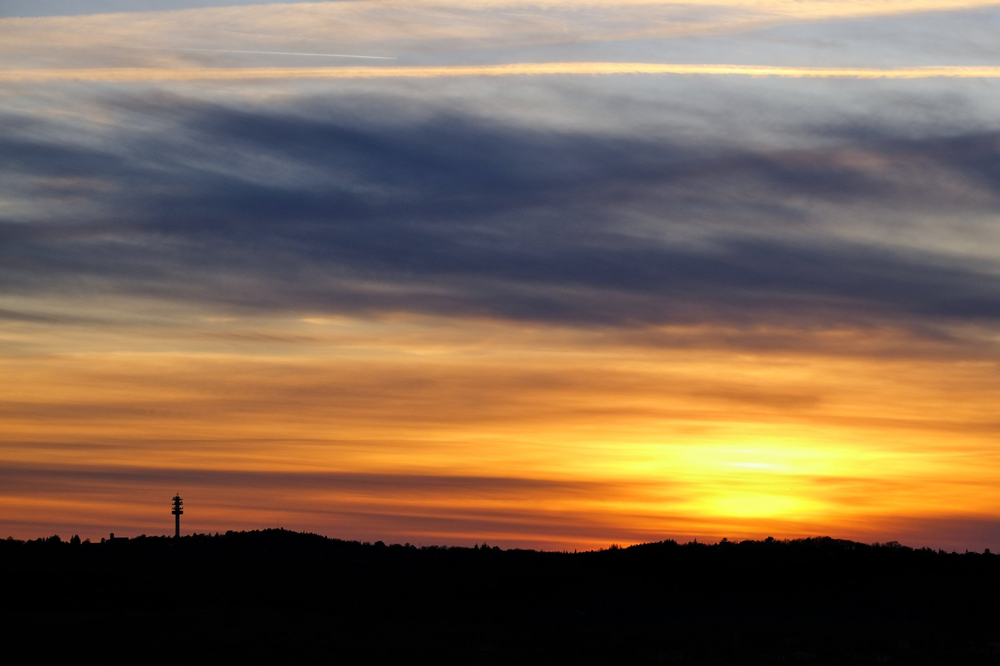
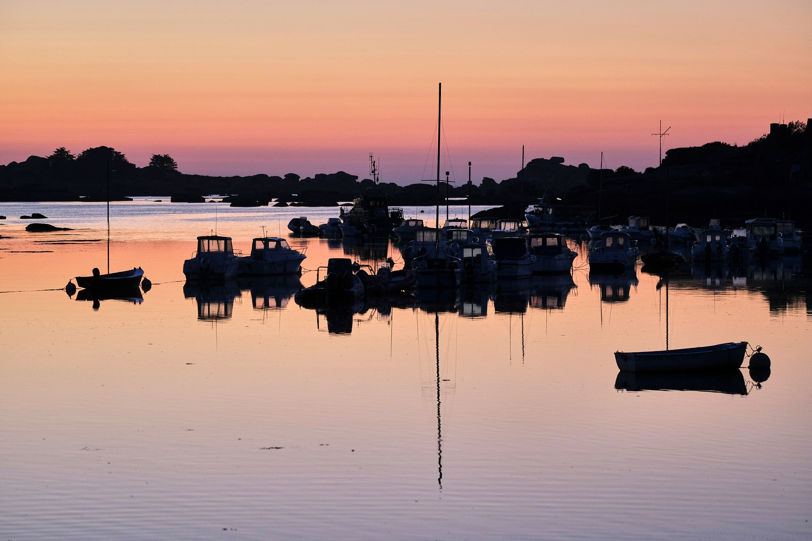
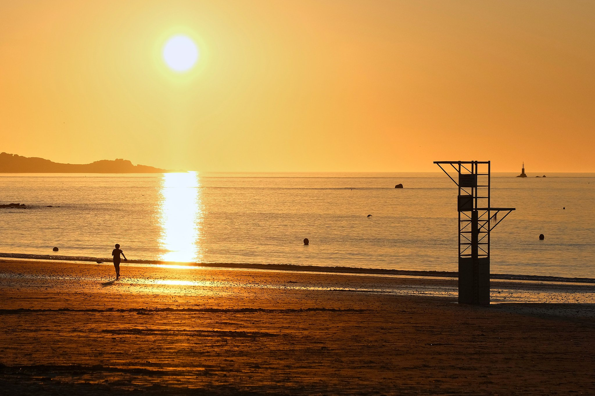
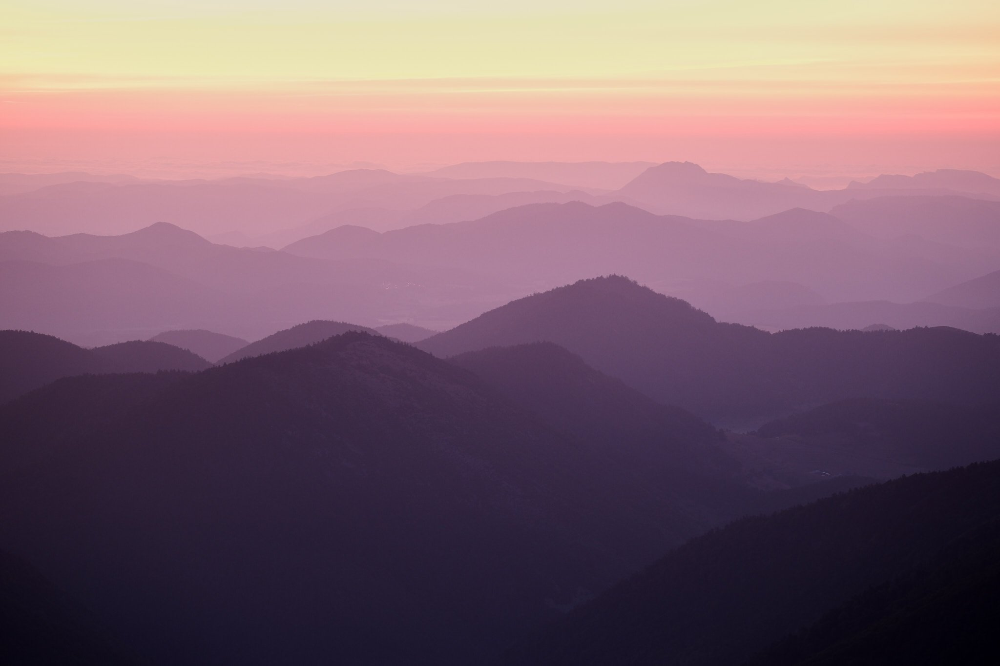
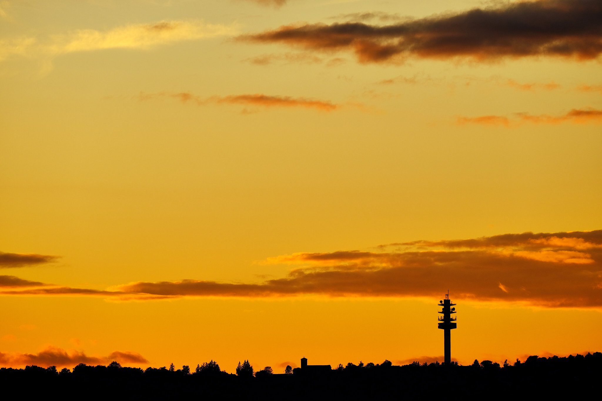

Biarritz (64)- ISO 160 1/450s f/3.6 18mm - FUJIFILM XS-10

(82)- ISO 160 1/950s f/5 90mm - FUJIFILM XS-10
 Cantal (15)- ISO 160 1/1000s f/5 90mm - FUJIFILM XS-10
Cantal (15)- ISO 160 1/1000s f/5 90mm - FUJIFILM XS-10

Bretagne - ISO 160 1/900s f/5 90mm - FUJIFILM XS-10

Lot (46) - ISO 160 1/280s f/2.8 90mm - FUJIFILM XS-10

Bretagne - ISO 160 1/250s f/2 90mm - FUJIFILM XS-10

Bretagne - ISO 320 1/2200s f/6.4 90mm - FUJIFILM XS-10

Ariège (09) - ISO 200 1/1.9s f/4.5 100mm - FUJIFILM X-T5

Lot (46) - ISO 160 1/450s f/5.6 219mm - FUJIFILM XS-10
❮
 ❯
❯